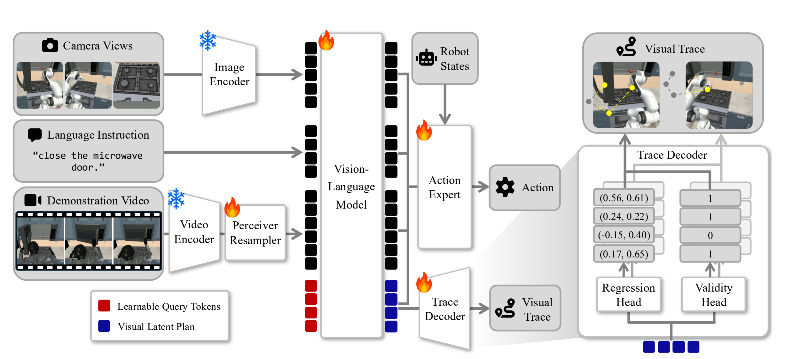

Architecture of SeeTraceAct. The model receives camera views, a
language instruction, a demonstration video, and robot states, and outputs an action
chunk. Learnable query tokens are appended after the input tokens; their final hidden
states form a visual latent plan, which is decoded into future end-effector
traces during training. The trace decoder is used only during training and discarded at
inference time.
SeeTraceAct builds on the GR00T N1.5 architecture, which pairs a vision-language model
(VLM) with a flow-matching action expert, and augments it with three components:
Video tokens. The demonstration video is encoded with an action-aware
video encoder (V-JEPA 2) and compressed by a Perceiver Resampler into a compact set of
32 video tokens appended to the VLM input. Under causal attention, the video tokens
attend to the image and language tokens, making the demonstration representation
context-dependent rather than fixed across the episode.
Visual latent plan. A separate set of learnable query tokens is
appended after the input tokens. These query tokens attend to the image, language, and
video tokens, and their final hidden states constitute a latent representation trained
to encode future task progression, which conditions action generation.
Visibility-aware trace decoder. During training, the latent plan is
decoded into future end-effector traces in each static camera view. Because the end
effector may leave some views, making its 2D coordinates ill-posed regression targets,
the decoder uses two heads: a regression head that predicts normalized trace
coordinates and a validity head that predicts whether each trace point lies within the
image — so off-screen points still provide a learning signal. The policy is trained with
a flow-matching action prediction loss plus this auxiliary visual trace loss, and the
trace decoder is discarded after training.